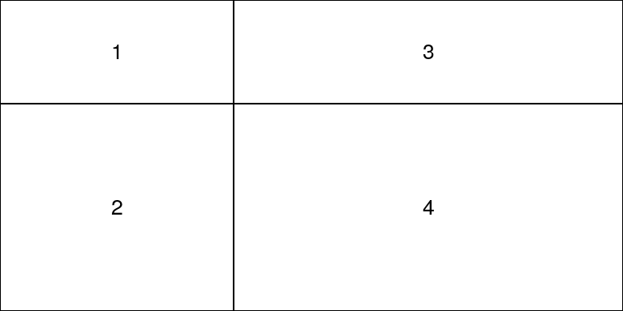
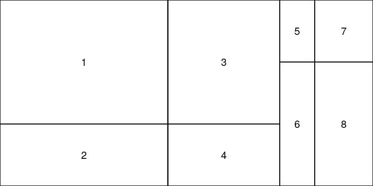
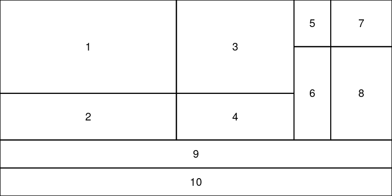
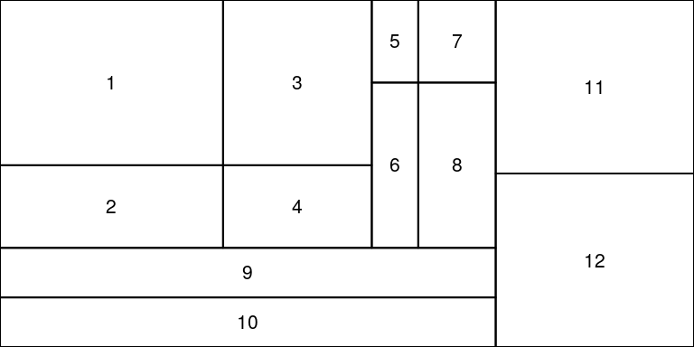
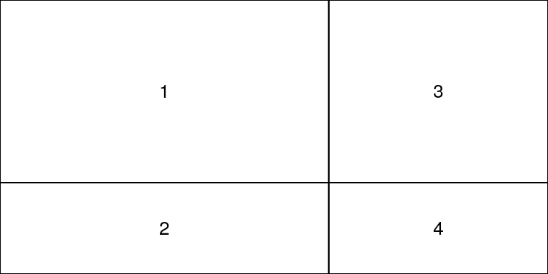
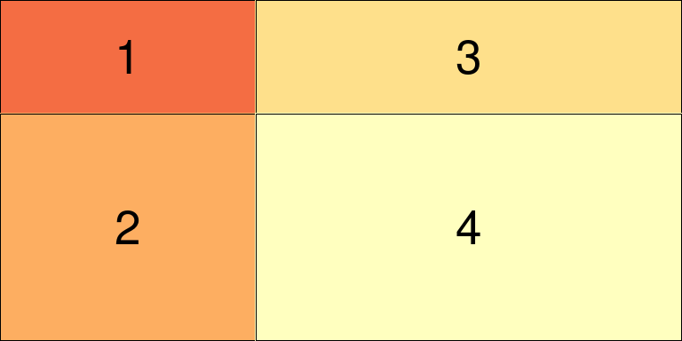
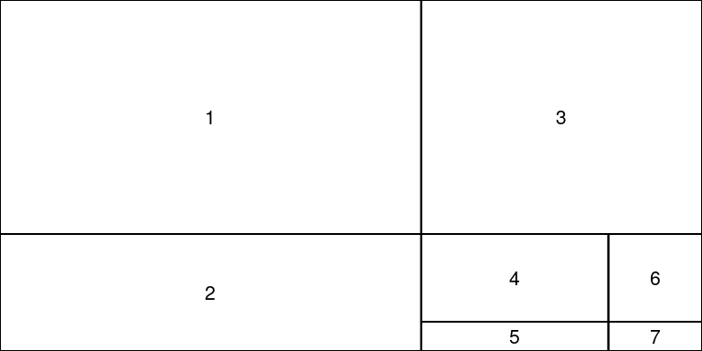

customLayout is a simple extension of basic layout function from R.
Basic functionality:
You can simply create layouts like in base R:
library(customLayout)
lay <- layCreate(
matrix(1:4, nc = 2),
widths = c(3, 2),
heights = c(2, 1))
layShow(lay)

But main strength of this package is in combining created layouts with specific ratio:
# lay will be 3 times wider that lay2
# all ascects in lay and lay2 will be preserved
cl = layColBind(lay, lay2, widths = c(3, 1))
layShow(cl)
You can also create even more complicated layouts:


Split layout
You can create very complicated layouts by splitting one field:
library(customLayout)
lay <- layCreate(
matrix(1:4, nc = 2),
widths = c(3, 2),
heights = c(2, 1))
layShow(lay)


Example session:
library(customLayout)
par(mar = c(3, 2, 2, 1))
lay <- layCreate(
matrix(1:4, nc = 2),
widths = c(3, 2),
heights = c(2, 1))
lay2 <- layCreate(matrix(1:3))
cl <- layColBind(lay, lay2, widths = c(3, 1))
laySet(cl) # initialize drawing area
set.seed(123)
plot(1:100 + rnorm(100))
plot(rnorm(100), type = "l")
hist(rnorm(500))
acf(rnorm(100))
pie(c(3, 4, 6), col = 2:4)
pie(c(3, 2, 7), col = 2:4 + 3)
pie(c(5, 4, 2), col = 2:4 + 6)